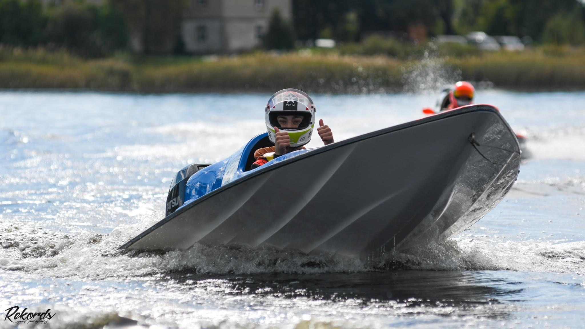
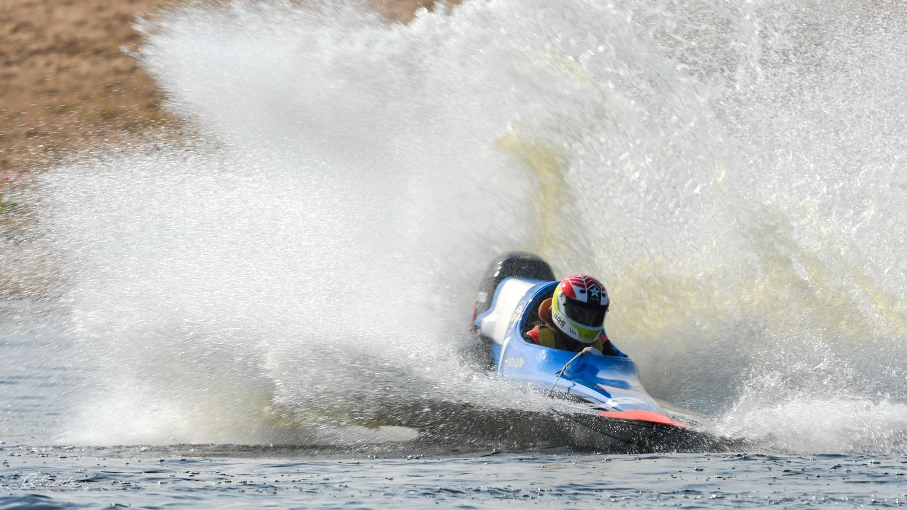
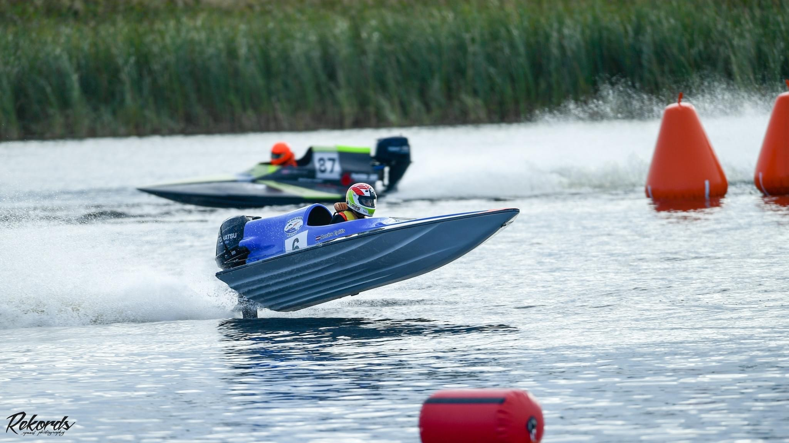
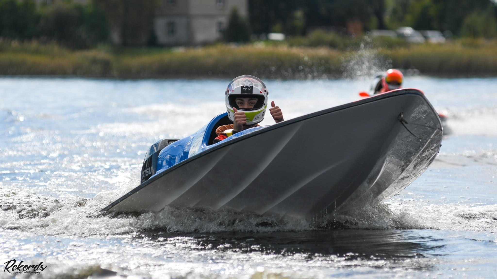
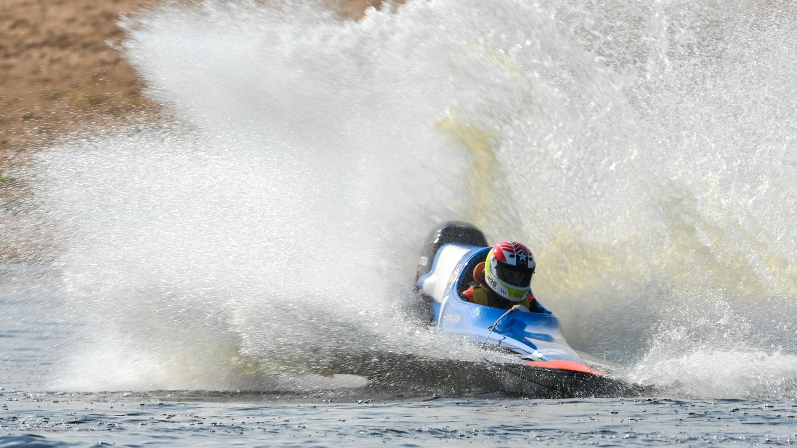
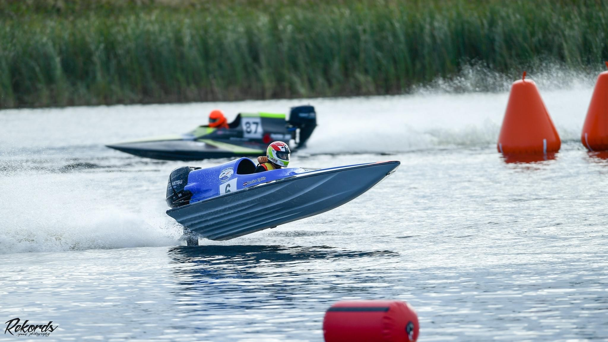
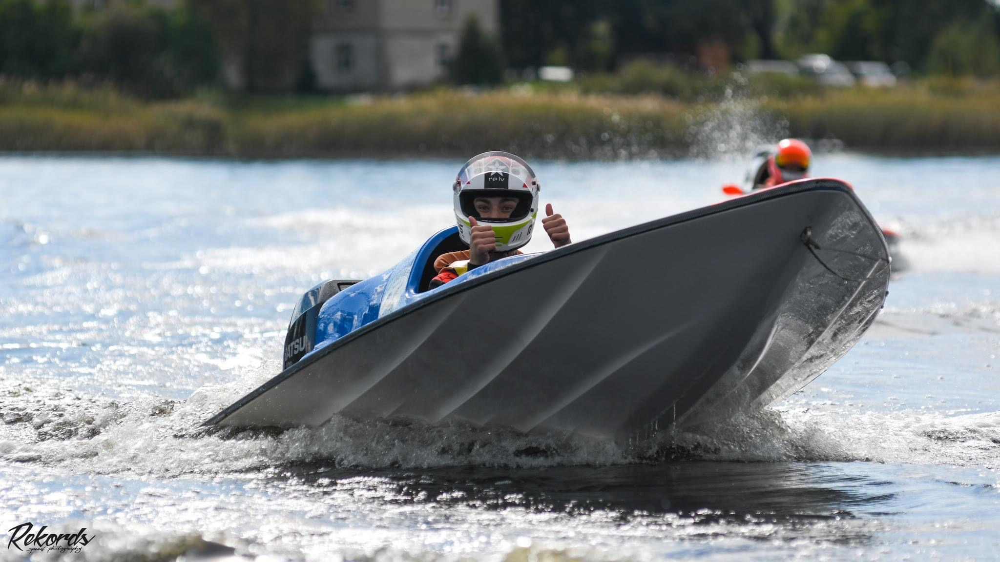
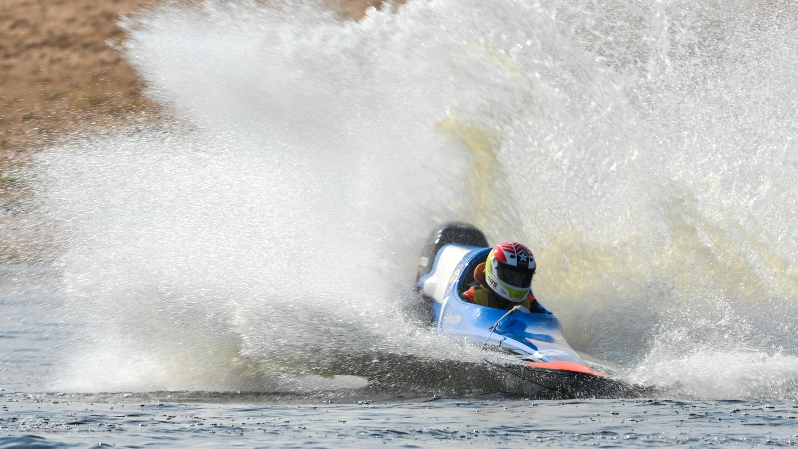
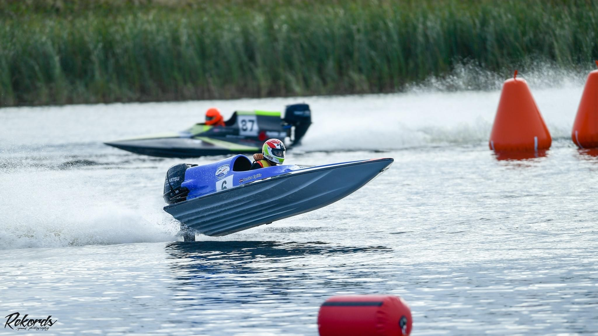

Galerija
 





Laipni lūdzam mūsu komandas vietnē! Šeit jūs atradīsiet aktuālo informāciju, jaunumus un sacensību rezultātus aprakstus. Mēs cenšamies tiecamies uz augstākajiem rezultātiem ūdensmotosportā. Mūsu komanda strādā ar degsmi un radošumu, lai palīdzētu sasniegt savus augstos mērķus.
Ātrumlaivu sacensībās piedalāmies kopš 2015. gada, uzrādot augstus rezultātus dažādās klasēss. Mūsu mērķis ir iegūt augstus rezultātus Eiropas un Pasaules mērogā. Mēs pastāvīgi pilnveidojamies un meklējam jaunus veidus, kā uzlabot mūsu gūtos rezultātus, un spētu sacensties ar Pasaules eliti.
Mūsu sasniegumi ietver: 3. vieta Eiropas čempionātā JT-250 laivu klasē, 2X 6. vieta Pasaules čempionātā GT-30 laivu klasē, 1. vieta Latvijas čempionātā S-550 laivu klasē un vēl daudzi citi.
| Sasniegumi | klase | Apraksts |
|---|---|---|
| Eiropas čempionātā | JT-250 | 3.vieta 2017. gadā |
| Pasaules čempionātā | GT-30 | 6. vieta 2019. un 2023. gadā |



Lejupielādējiet mūsu informatīvo materiālu:
Lejupielādēt PDFAdrese: Matīsa iela 89a, Rīga
Tālrunis: +371 28194167
E-pasts: renarseglitisracing@gmail.com